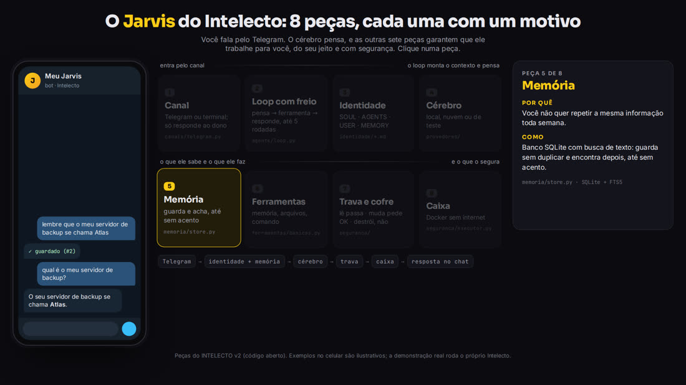

Option 1: four components, like a message delivered by hand
Think of a message you leave with the front desk of a building.
Telegram
The front desk: where you leave the message and where the reply comes back.
Bot
The doorman: checks that it’s you before passing the message along.
Claude Code
The employee who understands the request and decides what to do.
Terminal
The machine room: the command line, where the computer carries out instructions.

Option 2: Jarvis has 8 components, each with a purpose
The brain thinks. The other seven make sure it works for you, your way, and safely.
Channel
The intercom with a list of residents: it only replies to people on the list.
Loop with a brake
A limit on attempts: at most 5 rounds, so it never runs forever.
Identity
The ID badge and handbook: who it is, how it works, and who you are, in text you can edit.
Brain
The car’s engine: the AI that thinks. It can run on your computer, in the cloud, or as a test model. Changing the engine doesn’t change anything else.
Memory
The notebook: stores what you ask it to remember and finds it later, even without accent marks.
Tools
The hands: read and save files in the work folder, and run commands.
Safeguard and vault
The security guard at the door: reading is allowed, changing asks for your OK, destroying is never allowed. Passwords are kept in a locked vault, and everything is recorded in a logbook (the audit trail).
Sandbox
A closed room with no internet (a Docker container): if something goes wrong, the damage stays inside.

⚠️ What this project doesn’t promise
Option 1 here runs on a Telegram-style screen on the computer. To use real Telegram, you still need to create the bot (Telegram gives it a password called a “token”) and tell it your Telegram user ID, so only you can send messages. The request below asks AI to set this up with you. Intelecto (Option 2) already has the Telegram channel ready.